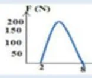
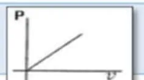
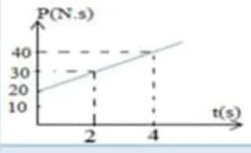
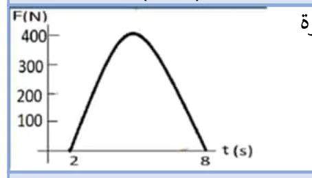
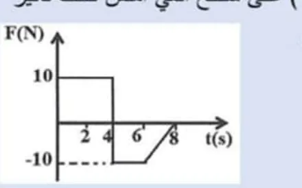
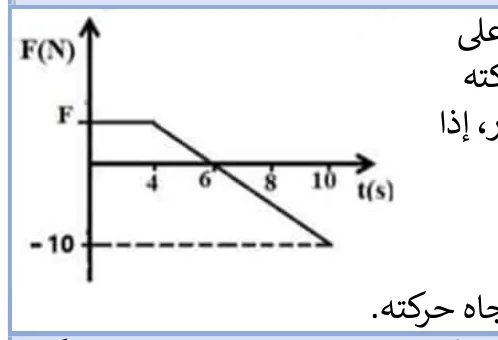
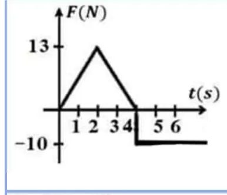
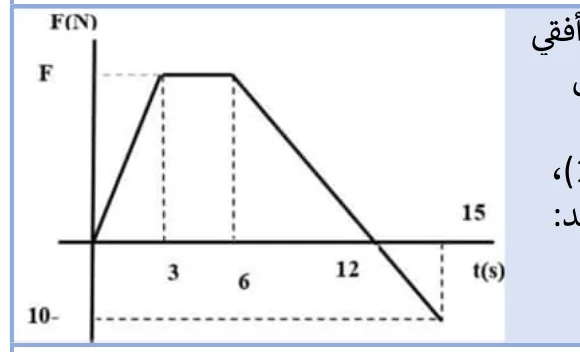

أسئلة امتحانات الثانوية العامة (الفرع العلمي) من 2017 إلى 2025 مصنفة على هذا الفصل: 45 سؤال اختيار من متعدد و33 سؤال مقالي ومسألة. اضغط على خيار لترى إن كان صحيحاً مع الشرح، وحاول حل المسائل قبل ما تفتح الإجابة.
جسم كتلته $\mathrm{5\,kg}$ وزخمه $\mathrm{15\,kg\cdot m/s}$، ما مقدار محصلة القوى التي يجب أن تؤثر على الجسم لزيادة سرعته إلى $\mathrm{9\,m/s}$ خلال $\mathrm{15\,s}$ بوحدة $N$؟
جسمان $A,B$، كتلة $B$ تساوي أربعة أمثال كتلة $A$، يتحرك الجسمان بحيث $v_A=2v_B$، ما مقدار الطاقة الحركية للجسم $A$؟
$K_A=\frac12m(2v)^2=2mv^2$ و $K_B=\frac12(4m)v^2=2mv^2$
52022 د1 صناعي
قذيفة كتلتها $\mathrm{2\,kg}$ انطلقت أفقياً بسرعة $\mathrm{200\,m/s}$ من فوهة مدفع ساكن كتلته $\mathrm{500\,kg}$، ما التغير في زخم المدفع بوحدة $\mathrm{kg\cdot m/s}$؟
حفظ الزخم: التغير في زخم المدفع يساوي زخم القذيفة مقداراً $=2\times200=400$ (بعكس الاتجاه).
62022 د1 صناعي
رجل وزنه $\mathrm{800\,N}$ يدفع طفلاً وزنه $\mathrm{300\,N}$ يقف على أرض تزلج بقوة مقدارها $\mathrm{50\,N}$، ما القوة التي يدفع بها الطفل الرجل بوحدة $N$؟
حسب قانون نيوتن الثالث: القوة مساوية بالمقدار ومعاكسة بالاتجاه.
72021 د2
إذا علمت أن المساحة تحت المنحنى لقوة متغيرة مع الزمن كما في الشكل المجاور تساوي $\mathrm{900\,N\cdot s}$، فما متوسط قوة الدفع بوحدة النيوتن؟

زمن التأثير من الشكل $8-2=6\,\mathrm{s}$، $\bar F=900/6=150\,\mathrm{N}$
82021 د1 علمي وصناعي
في تصادم بين كرتين أثرت الكرة الأولى على الثانية بقوة $\mathrm{100\,N}$ فتغير زخم الكرة الثانية بمقدار $\mathrm{5\,N\cdot s}$، ما مقدار زمن تصادم الكرتين بوحدة الثانية؟
جسمان $A$ و $B$ لهما نفس الكتلة، إذا كانت $P_A=3P_B$ فكم تساوي $K_A$؟
$K=\dfrac{P^2}{2m}$ ⇐ $K_A=9K_B$
102021 د1
جسمان $X,Y$ لهما نفس الكتلة، إذا كانت $K_x=9K_y$ فكم تساوي $P_x$؟
$P=\sqrt{2mK}$ ⇐ $P_x=\sqrt9\,P_y=3P_y$
112021 د2 صناعي
إذا دفع رجل كتلته $\mathrm{70\,kg}$ يقف على أرض جليدية أفقية ولداً ساكناً كتلته $\mathrm{50\,kg}$، فكم يساوي التغير في زخم الرجل والولد معاً بوحدة $\mathrm{kg\cdot m/s}$؟
النظام معزول فالزخم الكلي محفوظ ولا يتغير.
122021 د2 صناعي
اصطدمت كرة كتلتها $\mathrm{2\,kg}$ تتحرك بسرعة $\mathrm{4\,m/s}$ بحائط وارتدت عنه بنفس السرعة، فما مقدار التغير في كمية تحركها بوحدة $\mathrm{kg\cdot m/s}$؟
$\Delta P=m(v_f-v_i)=2(-4-4)=-16$ ومقداره $16$
132020 د1
ماذا يمثل ميل الخط المستقيم في الشكل المجاور للرسم البياني (الزخم – السرعة)؟

$P=mv$ فالميل $=\dfrac{P}{v}=m$
142019 د1
أي الكميات التالية تمثل المعدل الزمني للتغير في الزخم الخطي؟
$F=\dfrac{\Delta P}{\Delta t}$
152019 د3
في منحنى (الدفع – التغير في السرعة) ماذا يمثل ميل المنحنى؟
$I=m\Delta v$ فالميل $=m$
162019 د2
أي الكميات الفيزيائية الآتية لها نفس وحدة الدفع؟
وحدة الدفع $N\cdot s=kg\cdot m/s$ وهي وحدة الزخم.
172017 د3
يبين الشكل المجاور منحنى العلاقة بين الزخم والزمن لجسم يتحرك في خط مستقيم على سطح أفقي أملس تحت تأثير قوة ثابتة، ما مقدار القوة المؤثرة بوحدة النيوتن؟

القوة = ميل منحنى (الزخم – الزمن) $=\dfrac{40-30}{4-2}=5\,\mathrm{N}$
182019 د1
اصطدم جسم كتلته $\mathrm{2\,kg}$ يتحرك أفقياً بسرعة $\mathrm{6\,m/s}$ بجدار، فكان الدفع المؤثر عليه من الجدار $\mathrm{16\,N\cdot s}$، فما التغير في سرعته بوحدة $\mathrm{m/s}$؟
جسم كتلته $\mathrm{4\,kg}$ يتحرك بسرعة $\mathrm{2\,m/s}$ أثرت عليه قوة لمدة $\mathrm{4\,s}$ فازداد زخمه بمقدار $\mathrm{40\,N\cdot s}$، فما مقدار القوة المؤثرة عليه بوحدة النيوتن؟
تتحرك سيارة كتلتها $\mathrm{900\,kg}$ بسرعة مقدارها $v$، إذا بلغت قوة المحرك $\mathrm{1050\,N}$ خلال نصف دقيقة فأصبحت سرعة السيارة $\mathrm{55\,m/s}$، فما مقدار السرعة الابتدائية للسيارة؟
سقط جسم كتلته $\mathrm{1\,kg}$ سقوطاً حراً من ارتفاع $\mathrm{180\,cm}$ عن سطح الأرض، وارتد عنها رأسياً لأعلى بسرعة $\mathrm{2\,m/s}$، فما دفع الكرة على الأرض بوحدة $\mathrm{N\cdot s}$؟ علماً بأن $g=10\,\mathrm{m/s^2}$
سرعة الوصول $v=\sqrt{2gh}=\sqrt{36}=6\,\mathrm{m/s}$ لأسفل. دفع الأرض على الكرة $=1(2-(-6))=8$ لأعلى، فدفع الكرة على الأرض $8$ لأسفل (نيوتن الثالث).
222020 د3
يتحرك جسم كتلته $m$ بسرعة $v$، فما النسبة بين طاقته الحركية إلى زخمه $\left(\frac{K}{P}\right)$؟
$\dfrac{K}{P}=\dfrac{\frac12mv^2}{mv}=\dfrac v2$
232020 د1
جسمان $(X,Y)$ إذا كانت كتلة الجسم $Y$ تساوي $\frac14m_x$ وزخمه $\frac14p_x$، فما مقدار الطاقة الحركية $K_y$؟
كرة كتلتها $\mathrm{0.3\,kg}$ تسير بسرعة $\mathrm{30\,m/s}$ اصطدمت بحائط فارتدت في الاتجاه المعاكس بسرعة $\mathrm{20\,m/s}$، إذا كان زمن التصادم $\mathrm{0.1\,s}$، ما متوسط قوة الدفع المؤثرة عليها بوحدة النيوتن؟
إذا دفع رجل كتلته $\mathrm{80\,kg}$ يقف على أرض جليدية أفقية ولداً ساكناً كتلته $\mathrm{20\,kg}$ وتحرك الولد بسرعة $\mathrm{2\,m/s}$، فكم يساوي التغير في زخم الرجل والولد معاً بوحدة $\mathrm{kg\cdot m/s}$؟
نظام معزول: الزخم الكلي محفوظ.
292018 د1
اصطدمت كتلتان متماثلتان تتحركان باتجاهين متعاكسين بنفس السرعة، فما التغير في كمية تحرك النظام؟
زخم النظام محفوظ أثناء التصادم فالتغير صفر.
302020 د1
ما زخم نظام مكون من جسمين، الأول كتلته $m$ والثاني كتلته $\mathrm{3m}$، ويتحركان باتجاهين متعاكسين وبالسرعة نفسها $v$؟
$P=3mv-mv=2mv$ (باتجاه الجسم الأكبر)
312023 د1
جسمان $(A,B)$ لهما نفس الكتلة، إذا كانت الطاقة الحركية للجسم $A$ تساوي مثلي الطاقة الحركية للجسم $B$، فكم يساوي زخم الجسم $A$؟
$P=\sqrt{2mK}$ ⇐ $P_A=\sqrt2\,P_B$
322023 د2
يدفع رجل كتلته $\mathrm{50\,kg}$ يقف على أرض جليدية أفقية ولداً ساكناً كتلته $\mathrm{30\,kg}$، كم يساوي التغير في زخم الرجل والولد معاً بوحدة $\mathrm{kg\cdot m/s}$؟
نظام معزول فالزخم الكلي لا يتغير.
332023 استكمالية
انفجرت قذيفة ساكنة كتلتها $\mathrm{16\,kg}$ إلى جزأين، فإذا كانت كتلة الجزء الأول $\mathrm{12\,kg}$ ويتحرك بسرعة $\mathrm{4\,m/s}$، فما مقدار طاقة حركة الجزء الثاني بوحدة الجول؟
جسمان $(a,b)$ إذا علمت أن $P_a=4P_b$ و $V_a=2V_b$، فما مقدار $K_a$؟
$K=\frac12PV$ ⇐ $K_a=\frac12(4P_b)(2V_b)=8K_b$
362024 د2
جسم كتلته $\mathrm{6\,kg}$ يتحرك بسرعة مقدارها $V$ أثرت عليه قوة مقدارها $\mathrm{12\,N}$ بنفس اتجاه حركته ولمدة $\mathrm{3\,s}$ فأصبح مقدار سرعته $\mathrm{2V}$، فكم يصبح مقدار زخمه بوحدة $\mathrm{kg\cdot m/s}$؟
$F\Delta t=m(2V-V)$ ⇐ $36=6V$ ⇐ $V=6\,\mathrm{m/s}$، والزخم النهائي $=6\times12=72$
372024 د2
قذيفة كتلتها $\mathrm{5\,kg}$ أطلقت أفقياً بسرعة $\mathrm{60\,m/s}$ من زورق حربي كتلته $\mathrm{400\,kg}$ ساكن على سطح الماء، بإهمال مقاومة الماء، ما مقدار سرعة ارتداد الزورق بعد إطلاق القذيفة مباشرة بوحدة $\mathrm{m/s}$؟
$5\times60=400\,v$ ⇐ $v=0.75\,\mathrm{m/s}$
382024 استكمالية
ما مجموع الزخم الخطي لنظام يتكون من كرتين، كتلة الكرة الأولى تساوي نصف كتلة الكرة الثانية وتسيران بنفس السرعة $V$ في اتجاهين متعاكسين؟
باعتبار $m$ كتلة الكرة الثانية: $P=mV-\frac12mV=\frac12mV$
392024 استكمالية
أثرت قوة في جسم ساكن بدفع مقداره $\mathrm{0.8\,kg\cdot m/s}$ فتحرك الجسم بسرعة $\mathrm{0.8\,m/s}$، ما كتلة الجسم بوحدة الكيلوغرام؟
جسمان $(m_1,m_2)$ كتلة الجسم الأول تساوي نصف كتلة الجسم الثاني $(m_1=\frac12m_2)$، وطاقته الحركية تساوي ثمن الطاقة الحركية للجسم الثاني $(K_1=\frac18K_2)$، ما النسبة بين زخم الجسم الأول إلى زخم الجسم الثاني $(P_1:P_2)$؟
إذا علمت أن المساحة تحت المنحنى القوة المتغيرة مع الزمن كما في الشكل المجاور تساوي $\mathrm{1200\,N\cdot s}$، فما متوسط قوة الدفع بوحدة نيوتن؟

زمن التأثير $8-2=6\,\mathrm{s}$، $\bar F=1200/6=200\,\mathrm{N}$
422025 د1
اصطدمت كرة كتلتها $\mathrm{2\,kg}$ تتحرك بسرعة $\mathrm{4\,m/s}$ بحائط وارتدت عنه بنفس السرعة، ما مقدار التغير في زخمها الخطي بوحدة $\mathrm{kg\cdot m/s}$؟
$\Delta P=2(-4-4)=-16$ ومقداره $16$
432025 د2
إذا مثلت العلاقة بيانياً بين الزخم الخطي لجسم على المحور الصادي والزمن على المحور السيني، فماذا يمثل ميل المنحنى؟
$F=\dfrac{\Delta P}{\Delta t}$
442025 د2
أي الآتي يكافئ وحدة الجول $J$ في النظام الدولي للوحدات؟
جسم كتلته $m$ وسرعته $V$ وطاقته الحركية $K$، إذا أصبحت طاقته الحركية مثلي ما كانت عليه، فكم تصبح سرعته؟
$K\propto v^2$ ⇐ $v'=\sqrt2\,\mathrm{V}$
السؤال الثاني (أ): ما المقصود بـ
12022 د1 علمي وصناعي
النظام المغلق
أظهر الإجابة
مجموعة الأجسام التي تبقى كتلتها ثابتة خلال عملية التصادم.
22021 د2 صناعي و2023
نظرية الدفع – كمية التحرك
أظهر الإجابة
الدفع الذي تحدثه القوة المحصلة في الجسم خلال فترة زمنية ما يساوي التغير في زخم الجسم خلال تلك الفترة: $I=\Delta P$
32020 د1 و2023 و2024
متوسط قوة الدفع
أظهر الإجابة
هي القوة الثابتة التي إذا أثرت على جسم خلال نفس الفترة الزمنية التي تؤثر فيها القوة المتغيرة أكسبته نفس كمية الدفع.
42019/2018 و2024 و2025
الدفع
أظهر الإجابة
كمية فيزيائية متجهة تساوي حاصل ضرب متوسط القوة في زمن تأثيرها، واتجاهها باتجاه القوة: $I=\bar F\,\Delta t$
52020 د3
الزخم الخطي
أظهر الإجابة
كمية فيزيائية متجهة تساوي حاصل ضرب كتلة الجسم في سرعته، وتكون في اتجاه السرعة: $P=mv$
السؤال الثاني (ب): علّل لما يلي
12021 د1 ود2 صناعي و2024
تجعل مواسير بنادق الصيد طويلة.
أظهر الإجابة
حتى يزداد زمن تأثير القوة فيزداد الدفع وتزداد سرعة القذيفة فتصل إلى مسافات أبعد.
22021 د2 علمي
سرعة ارتداد المدفع أقل بكثير من سرعة انطلاق القذيفة.
أظهر الإجابة
لأن الكتلة تتناسب عكسياً مع السرعة (الزخمان متساويان مقداراً)، فتكون كتلة المدفع كبيرة وبالتالي سرعة ارتداده صغيرة عكس القذيفة.
32020 د2
صعوبة إيقاف عربة نقل محملة بالبضاعة عن إيقافها وهي فارغة إذا كانت السرعة نفسها بالحالتين وخلال نفس الزمن.
أظهر الإجابة
لأن العربة المحملة بالبضاعة تكون كتلتها أكبر فيكون زخمها الخطي أكبر، فتحتاج إلى قوة أكبر لإيقافها.
42018 د2
تزوّد المركبات الحديثة بوسائد هوائية بحيث تندفع لحماية الركاب في حالة وقوع التصادم.
أظهر الإجابة
لأنها تعمل على زيادة زمن تأثير القوة مما يؤدي لتقليل القوة المؤثرة على السائق، لأن $F$ تتناسب عكسياً مع الزمن (عند ثبوت الدفع).
52017 د3
القفز من منطقة عالية على أرض رملية أكثر أمناً من السقوط على أرض صلبة.
أظهر الإجابة
لأن الرمل يعمل على زيادة زمن تأثير القوة وبالتالي نقصان القوة المؤثرة على الشخص بثبوت الدفع.
62018 د1
ضربة الملاكم السريعة ذات أثر على الخصم أكبر من الضربة البطيئة.
أظهر الإجابة
لأن الضربة السريعة زمنها قليل فتكون القوة كبيرة حسب العلاقة العكسية بين القوة والزمن.
72019 د1
تتكسر بيضة نيئة إذا سقطت من ارتفاع ما باتجاه أرض صلبة من الإسمنت وقد لا تتكسر إذا سقطت البيضة نفسها على أرض رملية من نفس الارتفاع.
أظهر الإجابة
لأن الرمل يعمل على زيادة زمن التصادم وبالتالي تكون قوة الرمل على البيضة أقل، حيث إن القوة تتناسب عكسياً مع الزمن عند ثبوت الدفع.
82017
تجعل سبطانات بنادق الصيد ذات المدى الكبير طويلة.
أظهر الإجابة
حتى يزداد زمن تأثير القوة فيزداد الدفع وتزداد سرعة القذيفة فتصل إلى مسافات أبعد.
92020
يصنع المدفع بحيث تكون كتلته كبيرة جداً نسبة إلى كتلة قذيفته.
أظهر الإجابة
لأن الكتلة تتناسب عكسياً مع السرعة، فتكون كتلته كبيرة وسرعة ارتداده صغيرة عكس القذيفة.
102017 د2
تكون كتلة المدفع أكبر بكثير من كتلة القذيفة.
أظهر الإجابة
لأن الكتلة تتناسب عكسياً مع السرعة، فتكون كتلته كبيرة وسرعة ارتداده صغيرة عكس القذيفة.
112022 د2 علمي وصناعي
عندما يقفز شخص من مكان عالٍ إلى الأرض فإنه يثني قدميه.
أظهر الإجابة
حسب العلاقة $F=\dfrac{\Delta P}{\Delta t}$ عندما يثني الشخص ركبتيه يكون زمن التصادم $\Delta t$ كبيراً فتكون قوة الدفع المؤثرة على الشخص قليلة.
122022 د2 علمي
مركبتان متساويتان في الكتلة وسرعة إحداهما ضعف سرعة الأخرى، أيهما تحتاج قوة أقل لإيقافها في نفس الفترة الزمنية ولماذا؟
أظهر الإجابة
المركبة الأبطأ تحتاج قوة أقل؛ لأن المركبة التي سرعتها أكبر زخمها أكبر فتحتاج لقوة أكبر لإيقافها خلال نفس الفترة الزمنية.
132023 د2
كمية الزخم الخطي محفوظة في الأنظمة المغلقة والمعزولة.
أظهر الإجابة
في النظام المعزول تكون محصلة القوى الخارجية المؤثرة في مجموعة الأجسام تساوي صفراً، وحسب نظرية الدفع – الزخم: $I=\Sigma F\,\Delta t=\Delta P$، وبما أن $\Sigma F=0$ ⇐ $\Delta P=0$ ⇐ $\Sigma P_i=\Sigma P_f$ = مقدار ثابت، أي أن الزخم كمية محفوظة.
السؤال الثالث: المسائل الحسابية
12022 د1 علمي
جسمان، الأول كتلته $m$ والثاني كتلته $\mathrm{2m}$، إذا كان الزخم الخطي للجسم الأول يساوي ثلثي الزخم الخطي للجسم الثاني، ومجموع طاقتيهما الحركية $\mathrm{68\,J}$، ما مقدار الطاقة الحركية للجسم الثاني؟
أظهر الإجابة
$K=\dfrac{P^2}{2m}$: $K_1=\dfrac{(\frac23P_2)^2}{2m}=\dfrac{2P_2^2}{9m}$ و $K_2=\dfrac{P_2^2}{4m}$ ⇐ $K_1:K_2=8:9$ $K_2=\dfrac{9}{17}\times68=36\,\mathrm{J}$
22022 د1 صناعي
كرة تتحرك بزخم خطي مقداره $P$، اصطدمت بحائط رأسي وارتدت عنه بطاقة حركية تساوي ربع طاقتها الحركية الابتدائية قبل اصطدامها بالحائط، أثبت أن مقدار الدفع الذي يؤثر به الجدار على الكرة يعطى بالعلاقة: $I=\frac32P$
جسم كتلته $\mathrm{4\,kg}$ يتحرك بسرعة $\mathrm{4\,m/s}$ على سطح أفقي أملس تحت تأثير قوة متغيرة مع الزمن كما في الشكل المجاور، احسب: (1) دفع القوة خلال $\mathrm{8\,s}$ (2) متوسط القوة المؤثرة خلال $\mathrm{8\,s}$ (3) أكبر سرعة يمكن أن يمتلكها الجسم في نفس اتجاه حركته.

أظهر الإجابة
(1) الدفع = المساحة: $10\times4-10\times2-\frac12(2)(10)=40-20-10=10\,\mathrm{N\cdot} s$ (2) $\bar F=\dfrac{10}{8}=1.25\,\mathrm{N}$ (3) أكبر سرعة عند $t=4\,\mathrm{s}$: $P=4\times4+40=56$ ⇐ $v=\dfrac{56}{4}=14\,\mathrm{m/s}$
42021 د1 صناعي
ضرب لاعب كرة ساكنة كتلتها $\mathrm{0.5\,kg}$ فانطلقت بسرعة $\mathrm{20\,m/s}$، إذا علمت أن زمن التصادم بين قدم اللاعب والكرة $\mathrm{0.02\,s}$، احسب: (1) مقدار الدفع الذي أثر به اللاعب على الكرة (2) متوسط مقدار القوة التي أثر بها اللاعب على الكرة.
يبين الشكل المجاور العلاقة بين السرعة والزمن لجسم كتلته $\mathrm{2\,kg}$، احسب: (1) مقدار الدفع المؤثر على الجسم خلال $\mathrm{3\,s}$ من لحظة بدء حركته (2) مقدار متوسط قوة الدفع خلال $\mathrm{4\,s}$ من لحظة بدء حركته (3) مقدار متوسط قوة الدفع خلال الفترة ما بين $(1s,3s)$
كرة كتلتها $\mathrm{50\,g}$ تسير نحو الغرب بسرعة $\mathrm{10\,m/s}$ اصطدمت بجدار رأسي وارتدت عنه بطاقة حركية تعادل $64\%$ من طاقتها الحركية الابتدائية وعلى الخط نفسه، أجب عما يلي: (1) ما الدفع المؤثر على الكرة (2) ما متوسط قوة دفع الجدار على الكرة إذا كان زمن التصادم $\mathrm{0.03\,s}$ (3) ما نوع التصادم؟
أظهر الإجابة
$K_f=0.64K_i$ ⇐ $v_f=0.8\times10=8\,\mathrm{m/s}$ شرقاً (1) باعتبار الشرق موجباً: $I=0.05(8-(-10))=0.9\,\mathrm{N\cdot} s$ نحو الشرق (2) $\bar F=\dfrac{0.9}{0.03}=30\,\mathrm{N}$ نحو الشرق (3) غير مرن، لأن الطاقة الحركية غير محفوظة.
72021 د2 علمي وصناعي
انفجر جسم ساكن إلى جسمين كتلة كل منهما $m_1,m_2$ فكانت الطاقة الناتجة عن الانفجار $K$، أثبت أن الطاقة الحركية التي يكتسبها الجسم الثاني $K_2$ تعطى بالعلاقة: $K_2=\dfrac{m_1}{m_1+m_2}K$
أظهر الإجابة
حفظ الزخم: $m_1v_1=m_2v_2=P$ ⇐ $K_1=\dfrac{P^2}{2m_1}$ و $K_2=\dfrac{P^2}{2m_2}$ ⇐ $\dfrac{K_2}{K_1}=\dfrac{m_1}{m_2}$ $K=K_1+K_2=K_2\left(\dfrac{m_2}{m_1}+1\right)$ ⇐ $K_2=\dfrac{m_1}{m_1+m_2}K$
82022 استكمالية
جسم كتلته $\mathrm{5\,kg}$ يتحرك بسرعة $\mathrm{10\,m/s}$ على سطح أفقي أملس، أثرت عليه قوة بشكل موازٍ لحركته وكانت تتغير مع الزمن حسب الرسم البياني المجاور، إذا كان متوسط قوة الدفع المؤثرة على الجسم خلال $\mathrm{10\,s}$ تساوي $\mathrm{13\,N}$، احسب: (1) مقدار القوة $F$ (2) أكبر سرعة يمكن أن يمتلكها الجسم في نفس اتجاه حركته.

أظهر الإجابة
(1) الدفع $=13\times10=130\,\mathrm{N\cdot} s$ = المساحة $=4F+\frac12(2)F-\frac12(4)(10)=5F-20$ ⇐ $F=30\,\mathrm{N}$ (2) أكبر سرعة عند $t=6\,\mathrm{s}$: $P=5\times10+150=200$ ⇐ $v=40\,\mathrm{m/s}$
92023 د1
جسم كتلته $\mathrm{4\,kg}$ يستقر على سطح أفقي أملس، أثرت عليه قوة متغيرة مُثلت بيانياً مع الزمن كما في الشكل المجاور، اعتماداً على البيانات المثبتة عليه احسب: (1) دفع القوة خلال $\mathrm{30\,s}$ (2) سرعة الجسم عند الزمن $\mathrm{10\,s}$ من بدء الحركة.
ضرب لاعب كرة ساكنة كتلتها $\mathrm{1\,kg}$ فانطلقت بسرعة $\mathrm{10\,m/s}$، احسب: (1) التغير في زخم الكرة (2) متوسط القوة التي أثر بها اللاعب على الكرة إذا استمر زمن التلامس $\mathrm{0.5\,s}$
اصطدمت كتلة مقدارها $\mathrm{50\,g}$ تسير بسرعة $\mathrm{5\,m/s}$ بجدار، وارتدت عنه بطاقة حركية تعادل ربع طاقتها الحركية الابتدائية وعلى الخط نفسه. احسب كلاً من: (1) الدفع المؤثر على الكرة (2) متوسط قوة دفع الجدار للكرة إذا كان زمن التصادم $\mathrm{0.02\,s}$
أظهر الإجابة
$K_f=\frac14K_i$ ⇐ $v_f=2.5\,\mathrm{m/s}$ بعكس الاتجاه (1) $I=0.05(-2.5-5)=-0.375\,\mathrm{N\cdot} s$ (مقداره $0.375$ بعكس اتجاه الحركة الأصلية) (2) $\bar F=\dfrac{0.375}{0.02}=18.75\,\mathrm{N}$
122024 د1
جسم كتلته $\mathrm{2\,kg}$ يتحرك بسرعة $\mathrm{2\,m/s}$ على سطح أفقي أملس أثرت عليه قوة متغيرة مثلت بيانياً كما في الشكل المجاور، احسب: (1) أقصى سرعة يمكن أن يصل إليها الجسم في نفس اتجاه حركته (2) متوسط القوة المؤثرة خلال $\mathrm{6\,s}$ (3) زمن توقف الجسم.

أظهر الإجابة
(1) عند $t=4\,\mathrm{s}$: $I=\frac12(4)(13)=26$ ⇐ $P=2\times2+26=30$ ⇐ $v_{max}=15\,\mathrm{m/s}$ (2) $I_{0\to6}=26-10\times2=6$ ⇐ $\bar F=\dfrac{6}{6}=1\,\mathrm{N}$ (3) بعد $t=4$: $\Delta t=\dfrac{30}{10}=3\,\mathrm{s}$ ⇐ يتوقف عند $t=7\,\mathrm{s}$
132024 د2
جسم كتلته $\mathrm{2\,kg}$ يتغير زخمه الخطي كما في الشكل المجاور، إذا علمت أن الطاقة الحركية الضائعة خلال أول ثانيتين $\mathrm{500\,J}$، جد: (1) متوسط القوة المؤثرة عليه من بدء الحركة وحتى سكونه (2) زمن توقف الجسم $(t)$
سائق سيارة كتلته $\mathrm{60\,kg}$ يقود سيارة بسرعة $\mathrm{25\,m/s}$، شاهد حيواناً على الطريق، فضغط على الكوابح ليتفادى الاصطدام بالحيوان، فاندفع إلى الأمام إلا أن حزام الأمان أوقفه عن الحركة خلال $\mathrm{0.5\,s}$، أجب عما يأتي: (1) ما متوسط القوة التي أثر بها حزام الأمان في السائق؟ (2) ما متوسط القوة التي سيؤثر بها المقود في السائق عند ارتطامه به خلال $\mathrm{0.001\,s}$ في حال عدم وضع حزام الأمان؟ (3) ماذا تستنتج من خلال إجابتك عن الفرعين السابقين؟
أظهر الإجابة
$\Delta P=60\times25=1500\,\mathrm{kg\cdot} m/s$ (1) $\bar F=\dfrac{1500}{0.5}=3000\,\mathrm{N}$ (2) $\bar F=\dfrac{1500}{0.001}=1.5\times10^6\,\mathrm{N}$ (3) حزام الأمان يزيد زمن التوقف فتقل القوة المؤثرة على السائق كثيراً (القوة تتناسب عكسياً مع الزمن عند ثبوت الدفع).
152025 د2
جسم كتلته $\mathrm{5\,kg}$ يستقر على سطح أفقي أملس، أثرت عليه قوة متغيرة بيانياً مع الزمن كما في الشكل المجاور، إذا علمت أن سرعة الجسم أصبحت $\mathrm{27\,m/s}$ عند $\mathrm{15\,s}$، بالاعتماد على البيانات المثبتة في الشكل جد: (1) مقدار $F$ (2) أكبر طاقة حركية يكتسبها الجسم.

أظهر الإجابة
(1) $I=5\times27=135$ = المساحة $=\frac12(3)F+3F+\frac{F+(-10)}{2}(9)=9F-45$ ⇐ $F=20\,\mathrm{N}$ (2) أكبر سرعة عند $t=12\,\mathrm{s}$: $I=30+60+60=150$ ⇐ $v=30\,\mathrm{m/s}$ ⇐ $K_{max}=\frac12(5)(30)^2=2250\,\mathrm{J}$